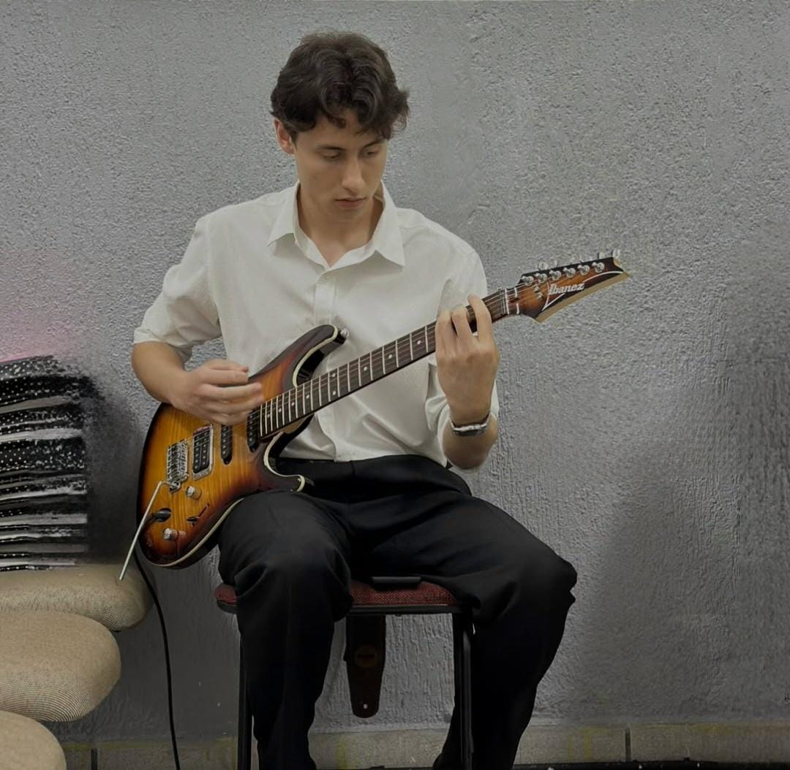
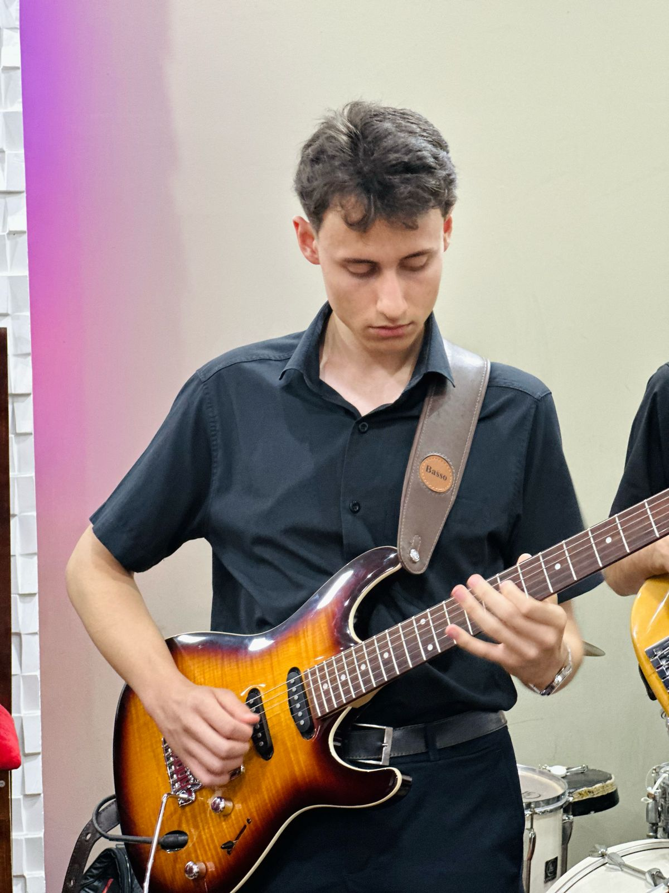
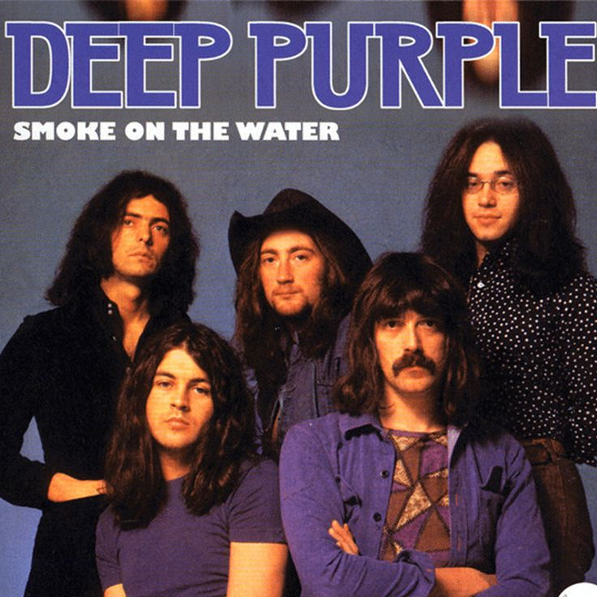
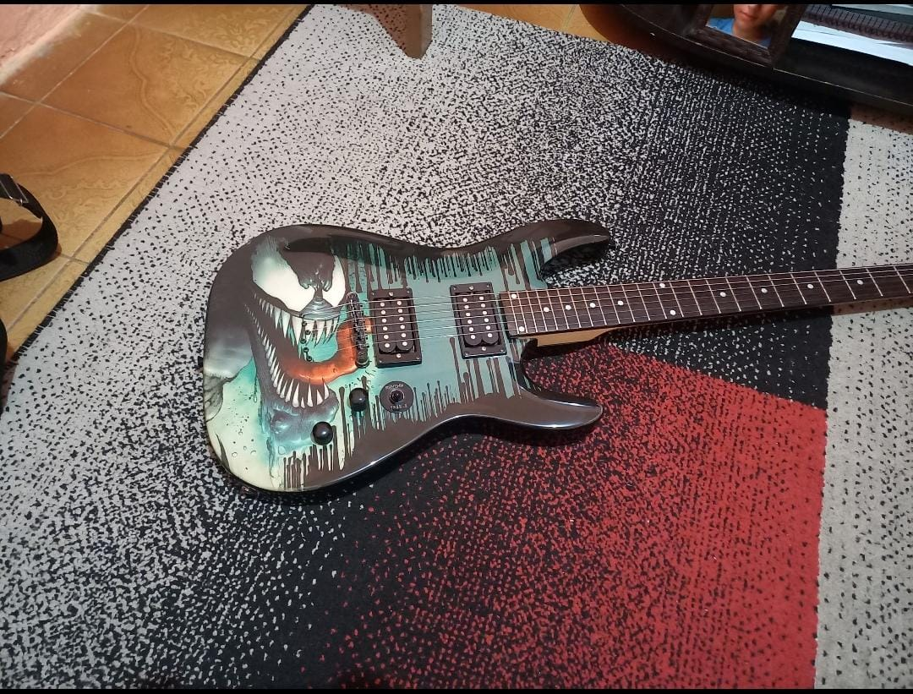
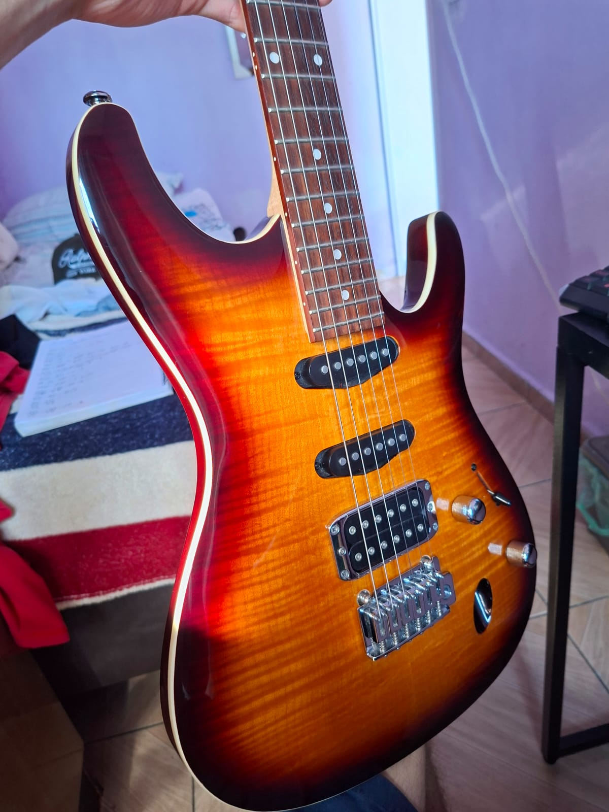
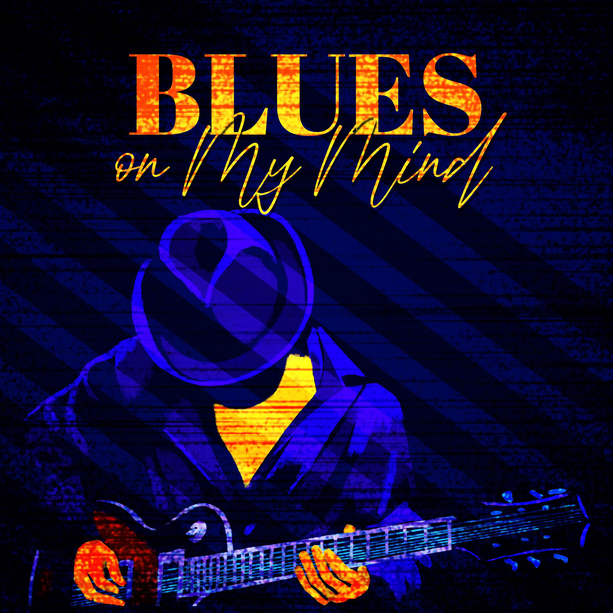

Paz e tranquilidade
Quando eu toco, sinto paz, calmaria e relaxamento. A guitarra me traz felicidade.
Aqui eu conto, do meu jeito, como a música sempre esteve perto de mim, como a guitarra me escolheu e o que ela me ensinou até hoje.

Desde pequeno, a música sempre esteve perto de mim. Meus pais me incentivaram a tocar instrumentos e eu sempre fiz aula. Já estudei bateria, violino, flauta, teclado e, por fim, guitarra.
Esse incentivo fez com que eu gostasse de instrumentos e visse a música como algo positivo na minha vida. Música é sentimento: você transforma em som aquilo que está sentindo, e as harmonias são lindas.
Passei por vários instrumentos, e é normal que seja assim, até descobrir qual é o seu. Nenhum deles me identificou como a guitarra. Nela eu consigo trazer sentimento e também velocidade.
A guitarra é uma conexão que eu não sei explicar.

Quando eu toco, sinto paz, calmaria e relaxamento. A guitarra me traz felicidade.
A guitarra abriu portas na minha vida e me levou a lugares, como os congressos de igreja em que toquei por convites que fui recebendo.
Por causa dela, conheci pessoas novas e cheguei a lugares aonde eu nem imaginava chegar.
Foi em 2021, aos 14 anos, ainda no período da pandemia, quando tudo e todos pareciam parados.
Um amigo, que também estava começando a tocar, me falava muito bem da guitarra, dos guitarristas e do som do instrumento. O jeito que ele me apresentou a guitarra me encantou.
Percebi que eu também queria aprender. Como ele já sabia um pouco, queria que ele me ensinasse.
Eu tinha dinheiro guardado. Fui até a loja e comprei a minha primeira guitarra, apenas por diversão, por hobby.
Nem que, mais tarde, eu teria aulas com um professor de conservatório. O que começou como diversão virou parte de quem eu sou.
A primeira música que aprendi, no meu primeiro contato com a guitarra, foi Come As You Are, do Nirvana. Logo em seguida, aprendi Smoke on the Water, do Deep Purple. Aprendi as duas com aquele amigo que também estava começando e me ensinou por chamada de vídeo.

Nirvana

Deep Purple
Eu me lembro até hoje: foi muito difícil tocar essas duas músicas, parecia que eu não ia conseguir. Mas eu estava muito feliz e empolgado, porque a guitarra estava soando. Por mais que não estivesse bonito, as músicas estavam saindo.
Uma me ensinou a tocar, a outra veio quando eu precisava dar o próximo passo.

Era a guitarra mais barata da loja, e eu a escolhi porque gostei muito do desenho. Mesmo sendo barata, tem um bom som e um ótimo custo-benefício.
Foi nela que tive minhas primeiras experiências, aprendi minhas primeiras músicas e evoluí bastante. Nunca consegui vendê-la: já me disseram para vender, mas ela tem um valor emocional enorme. Sempre cuidei dela, levava ao luthier, e até hoje volto a tocá-la de vez em quando.

Era a guitarra dos meus sonhos. Eu ficava em sites e vídeos vendo e ouvindo ela e achava muito linda. No dia em que a vi pessoalmente foi amor à primeira vista: o timbre me apaixonou na hora e passei muito tempo tocando nela. Esperei bastante para comprá-la.
Eu já tinha evoluído bastante e senti que era hora de migrar da minha primeira guitarra. O que me conquistou foi o clean e a definição: dá para ouvir bem os graves, os médios e os agudos. Ela se sai muito bem em qualquer gênero e timbre e, no clean, só com o amplificador e sem pedais, já soa incrivelmente bem.
Admiro vários guitarristas, e é difícil escolher um só. Tenho influência de muitos nomes, músicas, estilos e jeitos de tocar, de pessoas que tocam de formas diferentes e me ajudam a construir a minha própria sonoridade. Por isso, não consigo montar um top 3.
Lembro muito do Gary Moore pelo feeling e do Synyster Gates pela velocidade e pelos arpejos. Em algumas fases da minha vida, o Synyster Gates foi um exemplo para mim, o meu favorito da época. Hoje, já não sei dizer.
O nome que mais me lembra feeling na guitarra.
Me inspirou pela velocidade e pelos arpejos. Já foi meu favorito.
Uma referência de técnica e criatividade na guitarra.
Uma das minhas referências no blues.
Referência de técnica e originalidade.
Um gigante do blues que já me inspirou muito.
Também esteve entre os guitarristas que me inspiraram em uma fase.
Referência de técnica, improvisação e versatilidade.
O Tony me inspirou muito na minha trajetória. Ele me ensinou praticamente tudo o que eu sei, mudou completamente o meu jeito de tocar, me fez tocar com identidade e me ensinou a improvisar e a gostar tanto de improvisação. Tive aulas com ele do fim de 2022 até meados de 2024, e sou muito grato por tudo.
O gênero que mais toquei na vida e de que mais gosto, principalmente para relaxar, é o blues. É uma das minhas paixões ao tocar guitarra.
Meu professor percebeu essa afinidade comigo. Desde então, comecei a tocar muito sobre bases de blues, as backing tracks, e a mergulhar nas pentatônicas, a pentatônica menor e o blues maior.
Hoje gosto de improvisar sobre backing tracks de vários estilos, mas sempre volto para o blues quando quero só tocar, sem pensar.

Pentatônica menor de Lá, posição 1: a base de muita coisa no blues.
A essência do meu feeling e do meu improviso vem do blues.
Saber a hora de tocar e a hora de deixar a música respirar.
Existe a hora da calma e a hora da intensidade.
Nem toda nota precisa estar ali: às vezes, menos diz mais.
No blues, em um único gênero, você consegue fazer coisas muito diferentes: existem vários tipos de blues, com dinâmicas e jeitos de tocar variados. Entre as minhas referências estão Gary Moore, B.B. King e Joe Bonamassa.
Eu treinava blues com backing tracks junto com o Tony, e ele começou a se impressionar com os meus improvisos. Um dia, uma mulher que chegou para ter aula me ouviu improvisando e perguntou a ele: "Tony, por que esse menino está tendo aula com você? Ele é muito bom!" E o Tony respondeu: "É, daqui a pouco esse menino vai estar dando aula até para mim."
Guardo esse momento com carinho: as pessoas que me viam tocar gostavam do jeito que eu tocava blues e improvisava, e era genuíno.
Improvisar é dizer, na guitarra, aquilo que as palavras não alcançam.
Em tudo o que contei aqui dá para ver um pouco de improviso. Para mim, ele é uma arte: é pegar o que você está sentindo, a alegria, a calma, até aquilo que você não sabe explicar, e colocar na guitarra, na hora.
Quando improviso, quase não penso em escalas. Eu não penso no que fazer, eu só faço. Às vezes eu penso, mas nunca de forma robótica. E quando o fraseado sai do jeito que eu estava sentindo, fico feliz, contente, e às vezes até me surpreendo com o que saiu.
Foi isso que me fez amar tanto esse mundo. Se você nunca viveu isso, eu queria que pudesse sentir ao menos uma vez: pegar a guitarra, colocar uma base para tocar e deixar a música sair.
O improviso não é uma sequência sem respiro. As pausas também falam. Quando tocar e quando parar depende do momento, da intenção da música e do que eu quero passar.
Assim como a música, o improviso tem começo, meio e fim.
Posso começar com uma ideia curta e repeti-la, variando um pouco a cada vez. Eu costumo começar com um bend.
Pentatônica, CAGED, escala maior, modos gregos e arpejos são caminhos possíveis. O importante é que eles estejam a serviço do sentimento.
O jeito de atacar a corda com a palheta no bend, se você abafa as cordas antes, o vibrato dentro do bend, se vai um tom ou um tom e meio: tudo isso deixa o som reconhecível, dá sentimento e deixa a música mais bonita.
Já errei notas improvisando, consegui corrigir e acabou soando bem. Quando você conhece o que está fazendo, até o erro vira caminho. Lembro de um vídeo do John Mayer errando o solo da própria música e corrigindo de um jeito lindo.
Gosto de aprender uma escala nova e aplicá-la no improviso.
Sobre uma backing track, toco apenas essa escala, com muito feeling, bend, vibrato e velocidade.
No metrônomo você tem pouca liberdade e não sabe o que a técnica pode fazer. Na backing track é que você começa a improvisar.
Para quem está começando: pratique improvisando sobre backing tracks e coloque no improviso tudo o que você aprende de técnica.
No improviso eu não penso: eu sinto e toco.
Essa é a minha história até aqui, contada do jeito que eu sinto. A guitarra continua me ensinando, e eu continuo com vontade de aprender, de improvisar e de tocar.
Se você também toca, ou está pensando em começar, fica à vontade para falar comigo.
Fale comigo